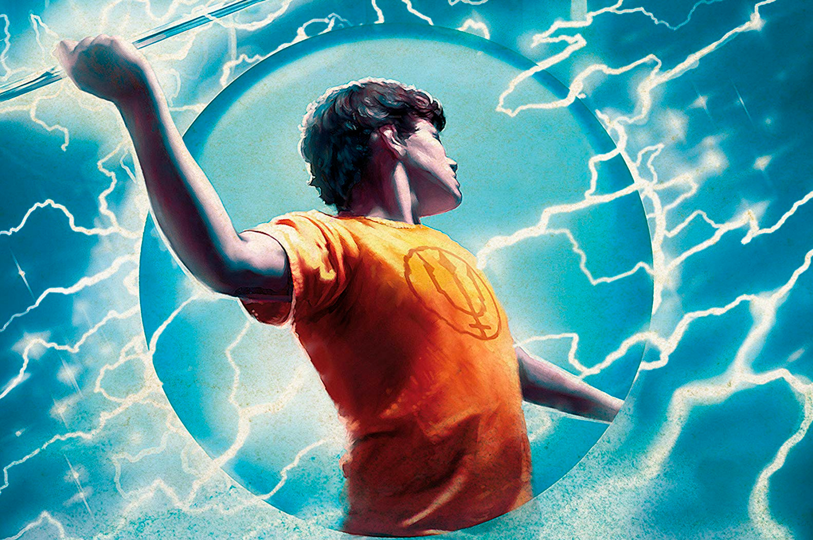

É uma coleção de livros, escrita por Rick Riordan!

Clique aqui para abrir o site:
- Percy é o personagem principal da série Percy Jackson e os Olimpianos;
- É um semideus grego;
- Filho de Poseidon.
- Primriro livro: O Ladrão de Raios
- Segundo: O Mar de Monstros
- Terceiro:A Maldição do Titã
| Nome |
Idade |
Parentesco divino |
| Nico Di'Angelo |
15 |
Filho de Hades |
| Percy Jackson |
17 |
Filho de Poseidon |
| Anabeth Chase |
17 |
Filha de Atena |
| Grover Underwood |
17 |
Sátiro |
| Will Solace |
15 |
Filho de Apolo |